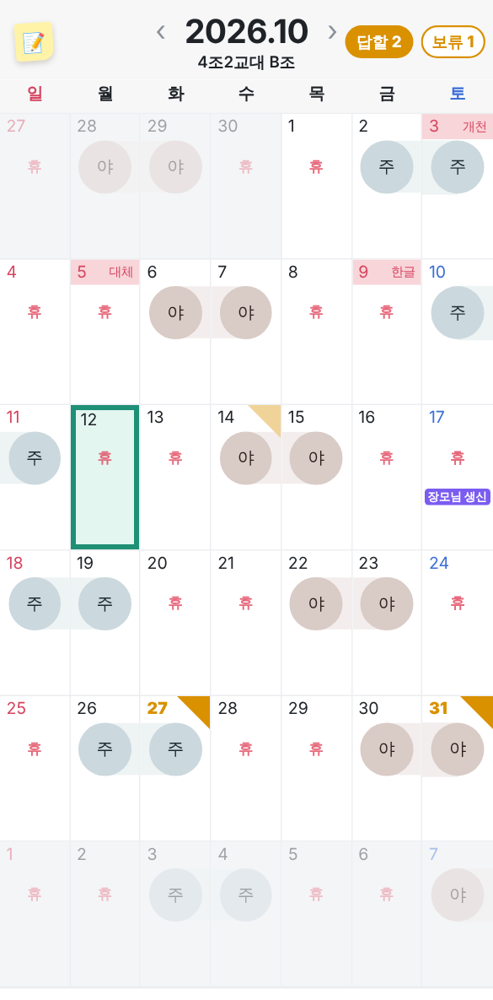
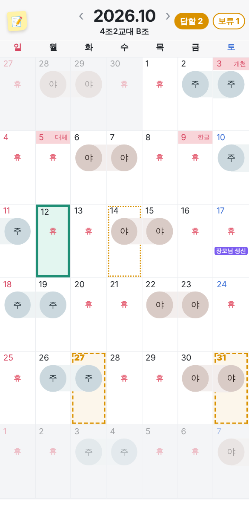
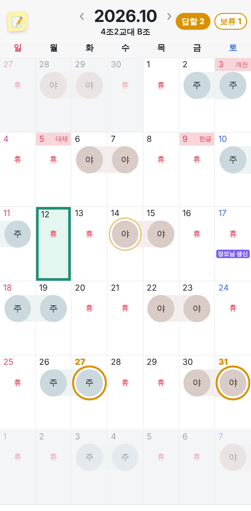
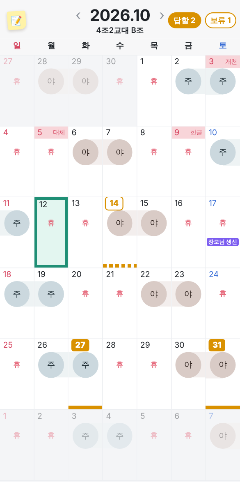

요청이 있는 날 · 모양으로 구분하기 (이모티콘 없이)
27일 · 31일 = 답할 요청, 14일 = 보류. 색은 같고 모양만 다르게 해 본 4가지예요.
A · 접힌 모서리칸 오른쪽 위가 종이처럼 접힌 모양
보류는 연한 모서리
B · 점선 칸칸 둘레에 점선 테두리
오늘(초록 실선)과 모양이 달라요
C · 동그라미 바깥 링주/야 동그라미 둘레에 링이 한 겹 더
달력에서 근무 모양이 바뀐 느낌
D · 네모 도장 + 아래 바날짜 숫자가 네모 도장, 칸 아래 굵은 바
보류는 점선 바